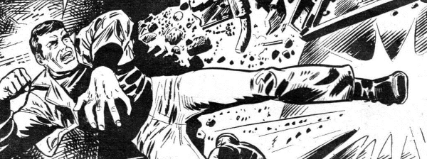

The Bionic Man crossed with 007. Thematically, this gets rebooted much later with the class struggle of Greysuit.
Art by Enio
| Story Title | Parts | Pages | w indicates a wraparound coverCovers | Year(s) | Issues | Writer | Artist | Colourist | Letterer |
|---|---|---|---|---|---|---|---|---|---|
| [Vulcan] | 2 | 11 | 0 | 1977 | Reprints: 2KA'82 X6 1-2 | Pat Mills: 1 Robert Flynn: 2various | Enio: 1 Ian Kennedy: 2various | [b&w] | Bill Nuttall: 1 Jack Potter: 2various |
| [Battleship] | 1 | 6 | 0 | 1977 | Reprints: 2KA'823 | Nick Allen | Massimo Belardinelli | [b&w] | Tony Jacob |
| [To Kill a President] | 1 | 6 | 0 | 1977 | Reprints: SFS5 X6 4 | Pat Mills | Enio | [b&w] | John Aldrich |
| [Probesnatch] | 1 | 5 | 0 | 1977 | Reprints: 2KA'83 X6 5 | Nick Allen | John Cooper | [b&w] | Jack Potter |
| [Himmler's Gold] | 1 | 6 | Mike Dorey 1 | 1977 | Reprints: X66 | Pat Mills | Mike Dorey | [b&w] | Jack Potter |
| [Bolivia] | 1 | 7 | 0 | 1977 | Reprints: X67 | Pat Mills | Enio | [b&w] | Bill Nuttall |
| [Spain Kidnap] | 1 | 5.5 | 0 | 1977 | Reprints: X68 | Nick Allen | John Cooper | [b&w] | Bill Nuttall |
| [Our Man in Turkostan] | 1 | 5 | 0 | 1977 | Reprints: X69 | John Wagner | John Cooper | [b&w] | Tony Jacob |
| On the Roof of the World | 1 | 6 | 0 | 1977 | Reprints: X610 | Pat Mills | Enio | [b&w] | Tony Jacob |
| Operation Death Drive! | 1 | 6.5 | 0 | 1977 | 11 | Roy Preston | Barry Mitchell | [b&w] | Jack Potter |
| [The Laser Hound] | 1 | 5 | 0 | 1977 | 12 | Charles Herring | Mike Dorey | [b&w] | J. Swain |
| [Airship] | 1 | 6 | 0 | 1977 | Reprints: X613 | Nick Allen | Jesus Redondo | [b&w] | Jack Potter |
| [Chinese Formula] | 1 | 5.5 | 0 | 1977 | 14 | Steve MacManus | Kato | [b&w] | John Alrich |
| [Yeti] | 1 | 6 | Brian Bolland 1 | 1977 | 15 | Peter Harris | Marzal Canos | [b&w] | Tony Jacob |
| [Capitol] | 1 | 6 | Brian Bolland 1 | 1977 | 16 | John Wagner | P. Martinez Henares | [b&w] | John Aldrich |
| [Spotbox] | 1 | 6 | 0 | 1977 | 17 | Nick Allen | Jesus Redondo | [b&w] | Peter Knight |
| [Skyscraper Terrorists] | 1 | 6 | 0 | 1977 | 18 | Nick Allen | Marzal Canos | [b&w] | Peter Knight |
| [Corporal Tanaka] | 1 | 5.5 | 0 | 1977 | 19 | Robert Flynn | Luis Collado | [b&w] | John Aldrich |
| [Tokyo] | 1 | 6 | 0 | 1977 | 20 | Steve MacManus | Lopez | [b&w] | John Aldrich |
| [Recluse] | 1 | 5 | 0 | 1977 | 21 | Nick Allen | Carlos | [b&w] | John Aldrich |
| [Arab Story] | 1 | 5 | 0 | 1977 | Reprints: SFS622 | Nick Allen | John Cooper | [b&w] | Jack Potter |
| [Spy Plane] | 1 | 5 | 0 | 1977 | 23 | Robert Flynn | Massimo Belardinelli | [b&w] | John Aldrich |
| [King Karat] | 1 | 5 | 0 | 1977 | 24 | Roy Preston | Massimo Belardinelli | [b&w] | Tony Jacob |
| [Terror Train] | 1 | 6 | 0 | 1977 | 25 | Nick Allen | Pierre Frisano | [b&w] | John Aldrich |
| [The Death Trumpet] | 1 | 6 | 0 | 1977 | 26 | Steve MacManus | Marzal Canos | [b&w] | Peter Knight |
| [Sting in the Tail] | 1 | 5 | 0 | 1977 | 2KA'78 | unknown | unknown | [greyscale] | unknown |
| Operation Hercules | 1 | 7 | 0 | 1977 | 2KA'78 | unknown | unknown | [b&w] | unknown |
| [The] Planet Killers | 3 | 19 | 0 | 1977 | Reprints: X627-29 | Pat Mills | Jesus Redondo | [b&w] | Jack Potter: 1 Tom Frame: 2‑3 various |
| [UFO] | 4 | 22 | 0 | 1977 | Reprints: X930-33 | Pat Mills | Carlos Freixas | [b&w] | Tom Frame: 1‑2, 4 John Aldrich: 3 various |
| [Everest] | 2 | 9 | 0 | 1977 | Reprints: X634-35 | Scott Goodall | John Cooper | [b&w] | Jack Potter |
| [M.A.C.H. Woman] | 4 | 22 | 0 | 1977 | Reprints: X636-39 | Alan Hebden | Marzal Canos, Lozano: 1‑3 Lozano: 4 various | [b&w] | Jack Potter |
| Death Ray | 3 | 17 | 0 | 1977 | 40-42 | Alan Hebden | Marzal Canos Lozanovarious | [b&w] | Jack Potter: 1 Steve Potter: 2‑3 various |
Linked to MACH ZERO[M.A.C.H. Zero] | 4 | 22 | 0 | 1977-1978 | Reprints: X943-46 | Steve MacManus | Ramon Sola | [b&w] | Tom Frame: 1 Jack Potter: 2‑4 various |
| [Return to Sharpe] | 1 | 5 | 0 | 1978 | Reprints: X953 | Roy Preston | Montero | [b&w] | Bill Nuttall |
| The Dolphin Tapes | 4 | 21 | 0 | 1978 | Reprints: X954-57 | Steve MacManus: 1‑2 Oniano: 3‑4 various | Jesus Redondo: 1‑2 Montero: 3‑4 various | [b&w] | Jack Potter |
| [Swamp Saga] | 1 | 5 | 0 | 1978 | Reprints: X958 | Roy Preston | John Cooper | [b&w] | Peter Knight |
| [Origins] | 2 | 8 | 60: Brian Bolland 1 | 1978 | Reprints: X959-60 | Nick Landau Roy Prestonvarious | Lothano | [b&w] | Peter Knight: 1 Jack Potter: 2 various |
| The Final Encounter | 4 | 25 | 0 | 1978 | Reprints: X961-64 | Pat Mills | Montero | [b&w] | John Aldrich: 1 Jack Potter: 2‑4 various |
| The MACH-Man File | 1 | 9 | 0 | 1978 | SFS1 | Mike Lake | Trevor Goring | [b&w] | Tony Jacob |
| [The Montreal Connection] | 1 | 9 | 0 | 1978 | 2KA'79 | unknown | unknown | [b&w] | unknown |
| [The Taxaco Venture] | 1 | 6 | 0 | 1979 | SFS2 | Gary Rice | Garry Leach | [greyscale] | S. Richardson |
| >> Floating Covers << | |||||||||
| Nobody Does It Better! M.A.C.H.1 | ~ | ~ | 1 | 2004 | X6 | n/a | John Burns | <-- | n/a |
| You Only Die Once! | ~ | ~ | 1 | 2005 | X9 | n/a | Jim Murray | <-- | n/a |
| >> Features << | |||||||||
| For Your Eyes Only! | 1 | 1 | 0 | 2004 | X6 | unknown | [dummy art reprints] | [b&w] | n/a |
| Databyte | 1 | 2 | 0 | 2006 | p2007 | n/a | John Cooper | <-- | n/a |
| year | episodes | pages |
| 1977 | 47 | 266 |
| 1978 | 15 | 87 |
| 1979 | 1 | 6 |
| 1980 | 0 | 0 |
| 1981 | 0 | 0 |
| 1982 | 0 | 0 |
| 1983 | 0 | 0 |
| 1984 | 0 | 0 |
| 1985 | 0 | 0 |
| 1986 | 0 | 0 |
| 1987 | 0 | 0 |
| 1988 | 0 | 0 |
| 1989 | 0 | 0 |
| 1990 | 0 | 0 |
| 1991 | 0 | 0 |
| 1992 | 0 | 0 |
| 1993 | 0 | 0 |
| 1994 | 0 | 0 |
| 1995 | 0 | 0 |
| 1996 | 0 | 0 |
| 1997 | 0 | 0 |
Comic strip data (excludes other content):